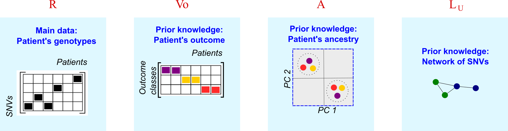

The algorithm takes four sources of data in the input:

We set \(R_{(n \times m)}\) to encode the genotypes of \(m\) patients across \(n\) SNVs under an additive genetic model. Thus, the entries of \(R\) are 0, 1 or 2 depending on the number of recessive allele copies carried by the patient at a given SNV.
We cannot provide you with a function to contruct \(R\) because the genotyping data format is highly variable and must be pre-processed depending on your research needs. Here we included a dummy example of this matrix (data(R)), and sketched some guidelines to create \(R\) in your script:
Filter the variants and patients that you want to include in \(R\). Bearing in mind the memory RAM available in your machine, you could start the analysis with small matrices (e.g., 1000 SNVs by 500 patients) and scale the process afterwards.
Store the matrix in an object called R
This matrix should look like:
library(cnmtf)
R[ 1:10, 1:5 ]## patient.1 patient.2 patient.3 patient.4 patient.5
## rs16845307 1 1 1 2 2
## rs9384526 0 1 2 0 1
## rs4135335 2 2 1 1 2
## rs1652508 1 1 0 1 2
## rs15895 2 2 2 2 2
## rs11649508 2 2 2 2 2
## rs7800039 0 0 0 0 0
## rs6856276 2 0 1 1 2
## rs135757 1 2 1 1 2
## rs975230 1 2 2 0 2It is important to keep meta information on the localisation of the variant:
Construct a data frame called tmap to map every variant with their gene (entrezid), the chromosome and the position of the SNV in the chromosome.
Name the columns of tmap as:
colnames(tmap) <- c("refsnp_id","entrezgene","chr","position")This dataframe should look like:
head(tmap)## refsnp_id entrezgene chr position
## 2408 rs16845307 22871 3 173499419
## 6019 rs9384526 57492 6 157464423
## 5187 rs4135335 5468 3 12409733
## 4497 rs1652508 4018 6 161048937
## 6746 rs15895 6311 12 111932671
## 717 rs11649508 1387 16 3927524Variants in LD tend to obscure the signals of association from weak loci in cNMTF, so we only keep one variant representing a gene region in high LD.
Use the function find.snps.ld to calculate LD between pairs of SNVs and save the results in a workspace "fileLD.RData":
library("LDcorSV")
cnmtf:::find.snps.ld( file.LD = "./test/fileLD.RData",
type.ld = "gene",
tmap = tmap, R = R)The algorithm will read this workspace file and filter out the variants for you.
The outcome matrix \(V_o\) has dimmensions of \(m\) patients by \(k_2\) outcome categories. We set \(k_2 = 2\) because we are studying binary outcomes or cases-control designs. The entries of this matrix are:
To constuct this matrix you only need to define a categorical vector of outcomes, out:
head(out)## [1] 0 0 1 0 0 0
## Levels: 0 1Now run the function construct.Vo:
Vo = cnmtf:::construct.Vo( out = out, ki = 2)
head(Vo)## [,1] [,2]
## [1,] 1 0
## [2,] 1 0
## [3,] 0 1
## [4,] 1 0
## [5,] 1 0
## [6,] 1 0This is a predefined matrix (\(m \times m\)) generated by a kernel function on the population of the patients. If the population origin is known we can fit the kernel matrix as:
However, the population origin is frequently unknown, so it must be inferred via Principal Component Analysis (PCA). The kernel \(A\) is defined by the similarity between patients in the principal components space \(A = RR^T / n\), using the function kernels.cnmtf:
kernels = cnmtf:::kernels.cnmtf(R = R, pop = "unknown")
#This function returns the population origin kernel:
A = kernels[[2]]
A[ 1:5, 1:5]## patient.1 patient.2 patient.3 patient.4 patient.5
## patient.1 2.35 2.03 2.08 2.03 2.10
## patient.2 2.03 2.26 2.03 1.97 2.13
## patient.3 2.08 2.03 2.49 2.07 2.26
## patient.4 2.03 1.97 2.07 2.37 2.13
## patient.5 2.10 2.13 2.26 2.13 2.71Finally, we construct a SNV-SNV network containing information about the genes harbouring the SNVs and their protein-protein interactions (PPIs).
You will need a table of edges from a PPI network (e.g, BioGrid). We included an example of this table, called dedges, containing the edges between pairs of proteins. The identifiers must be the entrezids of the genes:
head(dedges)## V2 V3
## 1 9577 580
## 2 1956 1499
## 3 580 580
## 4 8202 2033
## 5 5468 10891
## 6 10891 5468Call the function create.network:
library('doParallel')
library('biomaRt')
library("igraph")
cnmtf:::create.network( net.type = "ppi", #Type of reference network
dedges = dedges, #Object with edges from reference network
#Parameters for Linkage Disequilibrium
remove.highLD = TRUE,
ld.tao = 0.8, #Treshold of LD
res.ld = "./test/fileLD.RData", #Table of LD
#Parameters to construct Wu
R.snps = rownames(R), #List of SNPs in R
work.dat = "./test/", #Working directory
trait.project = "test", #Trait
n.cores = 3, #Number of cores for parallel computing
tmap = tmap, #Mapping of SNPs to genes
plot.file = "Gu_ppi_test_venn.pdf" )The results of this function will be saved in the working directory that you specify with work.dat. In this example, work.dat = "./test/".
Your input data is ready so the next step is to run cNMTF !